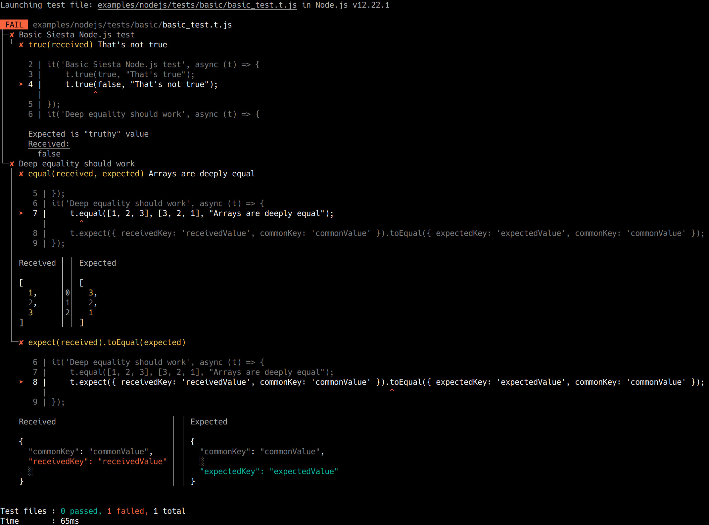

Siesta is a stress-free JavaScript/TypeScript testing tool. It is ubiquitous - tests can be run in browsers, Node.js and Deno, on Linux, macOS and Windows.
Moreover, in browsers, both in-process and out-of-process execution is supported.
In this guide, we assume a setup, pointed toward running tests in browsers, using in-process execution.
Siesta supports modern, ever-green browsers only - Chrome, Firefox, Safari and Chromium Edge. IE, legacy Edge and quirks mode are not supported.
Siesta runs the browser tests right on the browser page, so called "in-process" (or "in-page") execution. This means, your test file has full access to the page and Web API. There's no need to use the asynchronous evaluate command as commonly seen in tools like Playwright, Puppeteer and Selenium.
Such architecture means that test script can create and manipulate arbitrary DOM, using the regular Web API. For example, test can render some Web component and then check that its DOM object is properly created by accessing its style attribute directly.
However, test script will not survive the page redirect or reload. You should avoid doing that. In the future release we will allow running the script in the side iframe, which will survive the same-domain redirects of the testing page.
If you need to test the page with arbitrary redirects, then instead write your tests as Node.js scripts and use the "classic" Playwright API to create the page instance and evalulate command of those libraries ("out-of-page" execution model). In the future releases, we'll provide an unified API for both on-page and out-of-page testing scenarios.
Siesta itself is "transpilation" process agnostic and assumes native EcmaScript setup. However, Ecma spec does not define the behavior for the "bare import specifiers", like import { it } from "@bryntum/siesta/browser.js". The proposed solution for it, import maps is only partially supported in Chrome.
This means that the bundler-free development is still the shiny future (hopefully not a distant one) and in the meantime, an extra transpilation step / development web server is needed. We recommend Vite for this purpose, as a modern and very fast alternative to Webpack. However, any development server will work.
The example we made for a test suite targeting browsers, works with Vite with zero configuration. Yes, no Vite config is needed! This is kind of impressive, comparing how much hassle it can be with configuring the other bundling tools. See the examples/browser.
That example is very simple, it is possible that more complex apps will require certain configuration.
In any case, the configuration should consist no more than in specifying the test files as entry points:
Let's assume we have the following Siesta test file, called basic_test.t.js, which is available on the web URL as http://localhost:3000/tests/basic_test.t.js. We assume Vite server running.
To launch the whole test suite, one need to create the Siesta project.
Note, that currently, browser projects do not have the access to the file system and need to list all the test files manually, using the Project.plan method. This is to support the use case, of running the project fully in the browser, without relying on any OS process, which is convenient for debugging. In the future, we plan improve this.
Siesta supports simulating user actions, like clicking and typing. Simulation is performed with native events, so it triggers
the regular native browser behavior, like :hover styling, etc. In the future, we also plan to port the synthetic events
simulation from Siesta 5, which should work a bit faster, but will have limitations.
To simulate user action, just call an appropriate method. All of them are async:
One can load additional resources on the test page, before running it, using the preload config. Currently, it is only
recognized when provided in the project file.
This config allows you to load a JavaScript file, JavaScript module or CSS file on the page.
One can also use an external web page for running the test, for example generated by some external application.
This can be done with the pageUrl config. Currently, it is only
recognized when provided in the project file.
Getting started with Siesta in browser environment
Siesta is a stress-free JavaScript/TypeScript testing tool. It is ubiquitous - tests can be run in browsers, Node.js and Deno, on Linux, macOS and Windows. Moreover, in browsers, both in-process and out-of-process execution is supported.
In this guide, we assume a setup, pointed toward running tests in browsers, using in-process execution.
Siesta supports modern, ever-green browsers only - Chrome, Firefox, Safari and Chromium Edge. IE, legacy Edge and quirks mode are not supported.
Installation
Running tests in browsers is supported with the Node.js launcher only, so Siesta should be installed via
npmpackage manager:You should be able to run the Siesta launcher after installation, using the
npxcommand:Basics
To familiarize yourself with the basic Siesta concepts, which are common for all execution environments, please check the Siesta test basics guide.
In-process execution model
Siesta runs the browser tests right on the browser page, so called "in-process" (or "in-page") execution. This means, your test file has full access to the page and Web API. There's no need to use the asynchronous
evaluatecommand as commonly seen in tools like Playwright, Puppeteer and Selenium.Such architecture means that test script can create and manipulate arbitrary DOM, using the regular Web API. For example, test can render some Web component and then check that its DOM object is properly created by accessing its
styleattribute directly.However, test script will not survive the page redirect or reload. You should avoid doing that. In the future release we will allow running the script in the side iframe, which will survive the same-domain redirects of the testing page.
If you need to test the page with arbitrary redirects, then instead write your tests as Node.js scripts and use the "classic" Playwright API to create the page instance and
evalulatecommand of those libraries ("out-of-page" execution model). In the future releases, we'll provide an unified API for both on-page and out-of-page testing scenarios.Importing API
When targeting browser environment for running tests, import the Siesta API from the
@bryntum/siesta/browser.jsentry file.Support for the bare import specifiers
Siesta itself is "transpilation" process agnostic and assumes native EcmaScript setup. However, Ecma spec does not define the behavior for the "bare import specifiers", like
import { it } from "@bryntum/siesta/browser.js". The proposed solution for it, import maps is only partially supported in Chrome.This means that the bundler-free development is still the shiny future (hopefully not a distant one) and in the meantime, an extra transpilation step / development web server is needed. We recommend Vite for this purpose, as a modern and very fast alternative to Webpack. However, any development server will work.
The example we made for a test suite targeting browsers, works with Vite with zero configuration. Yes, no Vite config is needed! This is kind of impressive, comparing how much hassle it can be with configuring the other bundling tools. See the
examples/browser.That example is very simple, it is possible that more complex apps will require certain configuration. In any case, the configuration should consist no more than in specifying the test files as entry points:
Once you have this config in place, you can launch the development web server with:
npx viteLaunching individual test
Let's assume we have the following Siesta test file, called
basic_test.t.js, which is available on the web URL ashttp://localhost:3000/tests/basic_test.t.js. We assume Vite server running.We can launch it, by providing its url to the launcher. The
--browseroption defines in which browser to run the test. By default, itschrome.You should see something like: 
Launching test suite
To launch the whole test suite, one need to create the Siesta project.
Note, that currently, browser projects do not have the access to the file system and need to list all the test files manually, using the Project.plan method. This is to support the use case, of running the project fully in the browser, without relying on any OS process, which is convenient for debugging. In the future, we plan improve this.
Simulating user actions
Siesta supports simulating user actions, like clicking and typing. Simulation is performed with native events, so it triggers the regular native browser behavior, like
:hoverstyling, etc. In the future, we also plan to port the synthetic events simulation from Siesta 5, which should work a bit faster, but will have limitations.To simulate user action, just call an appropriate method. All of them are async:
Please refer to the documentation of the individual simulation methods:
Preload some files on the test page before executing
One can load additional resources on the test page, before running it, using the preload config. Currently, it is only recognized when provided in the project file.
This config allows you to load a JavaScript file, JavaScript module or CSS file on the page.
Using external page for test
One can also use an external web page for running the test, for example generated by some external application. This can be done with the pageUrl config. Currently, it is only recognized when provided in the project file.
Debugging
To debug the browser test, place a
debuggerstatement in it, then launch it as an individual test, with additional option--headless=false:Launcher will start the browser with the dev tools opened.
COPYRIGHT AND LICENSE
MIT License
Copyright (c) 2009-2021 Bryntum, Nickolay Platonov